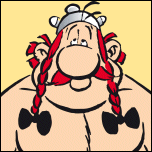

Obelix
- Nacionalidad : Galo
- Nombre en francés : Obélix
- Nombre en inglés : Obelix
- Nombre en alemán : Obelix
- Nombre en italiano : Obelix
- Nombre en portugués : Obélix
No está gordo
, cayó dentro de la marmita cuando era pequeño, compañero de Astérix. Decidido a hacer de Astérix un anti héroe, yendo contra todos los códigos establecidos del mundo del cómic, René Goscinny no quiso proveer a su personaje principal de un acólito que interpretara a su lado el clásico papel de «segundón». Pero Albert Uderzo un tanto frustrado por no haber podido dibujar a Astérix como un galo forzudo, como tanto anhelaba, no pudo evitar dotarle de la compañía de un fuerte y gran guerrero, más parecido a los impresionantes personajes musculosos que ya empezaba a dibujar. Así, Obélix, que apenas aparece en la primera aventura, se ha convertido rápidamente en un personaje esencial que sus autores han ido enriqueciendo poco a poco. Es el héroe que los lectores prefieren: todos los sondeos le sitúan a la cabeza de los personajes favoritos de la aldea. Incluso una encuesta realizada a colegiales y estudiantes corona a Obélix como ¡el personaje «más sexy» de los galos!... En las aventuras creadas por René Goscinny y Albert Uderzo, le descubrimos unas veces susceptible (¿Quién es gordo?), otras sensible (le hemos podido ver llorando en un «final feliz» amoroso), y por supuesto, glotón. Es como un niño que ha crecido demasiado rápido y que no es consciente de su fuerza (a su favor, cabe decir que ¡no todo el mundo cae en la marmita de la poción mágica cuando es pequeño!). Obélix es una fuente inagotable de gags. Torpe donde los haya, Obélix es irresistible, tanto cuando se pelea como cuando se enamora (¡y esto ocurre a menudo!), ...cuando le cuesta entender las cosas a la primera o cuando abusa de las bebidas alcohólicas («¡Ferpectamente!»)... Con él, siempre es la hora del recreo (bueno... ¡cuando la merienda se ha acabado!) y nada tiene realmente importancia ya que son los otros quienes están locos. ¿Permitirá la poción mágica recuperar la infancia perdida? No creo que los romanos compartan esta apreciación...